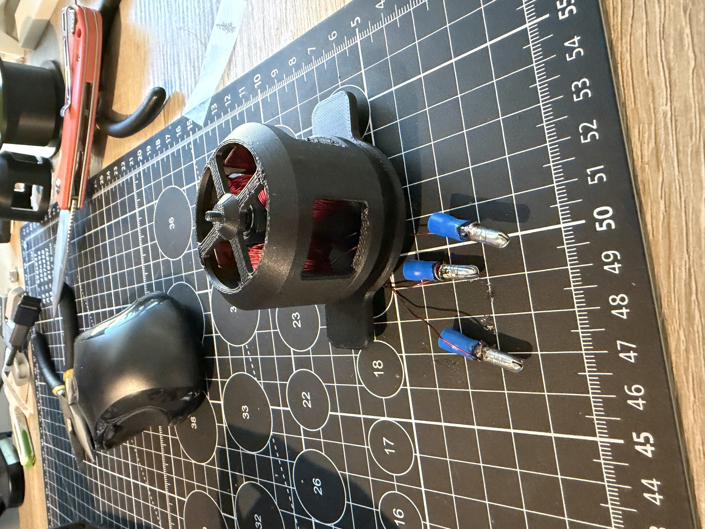
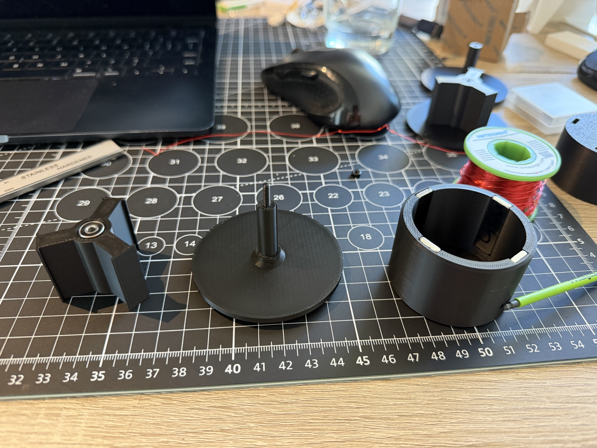
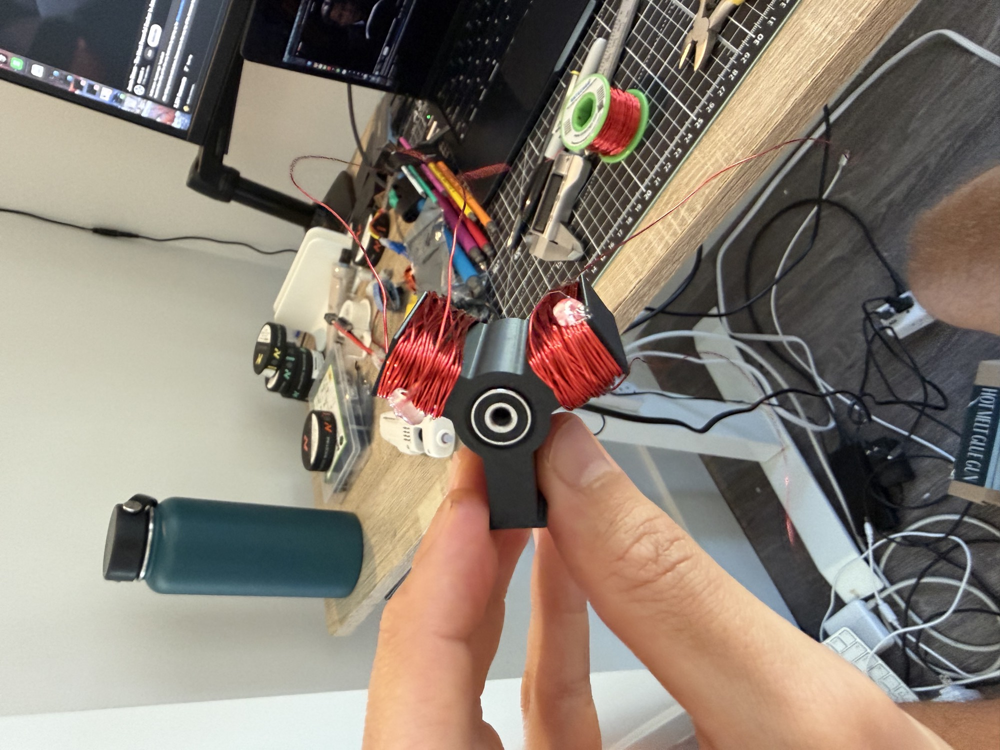
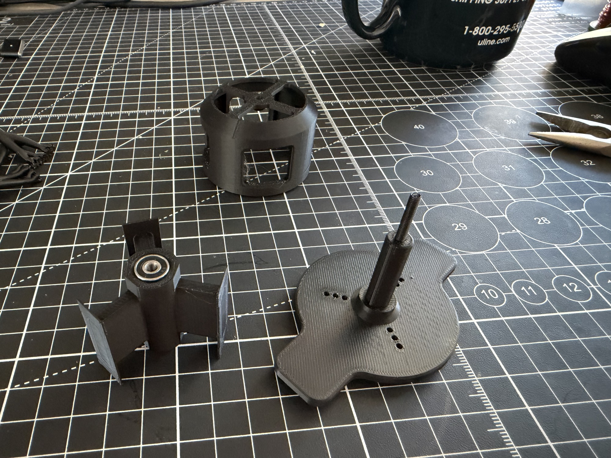
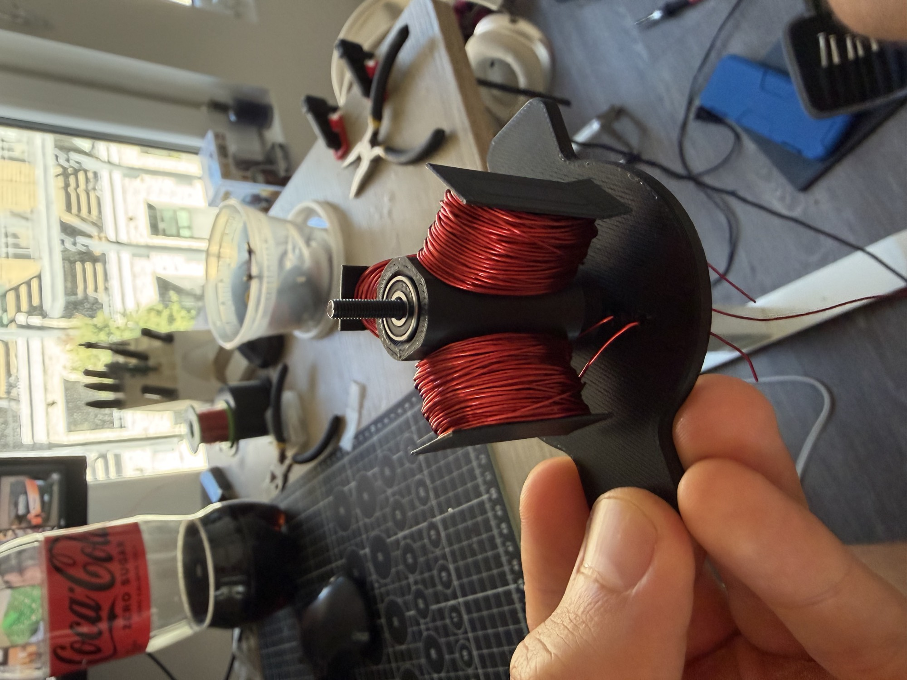
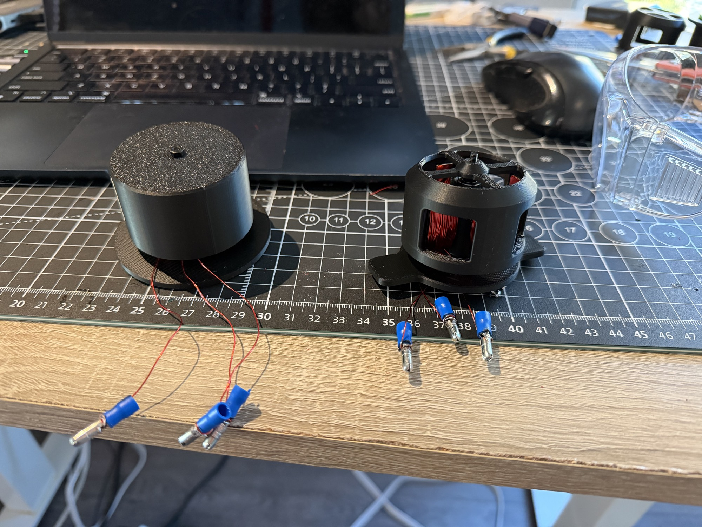
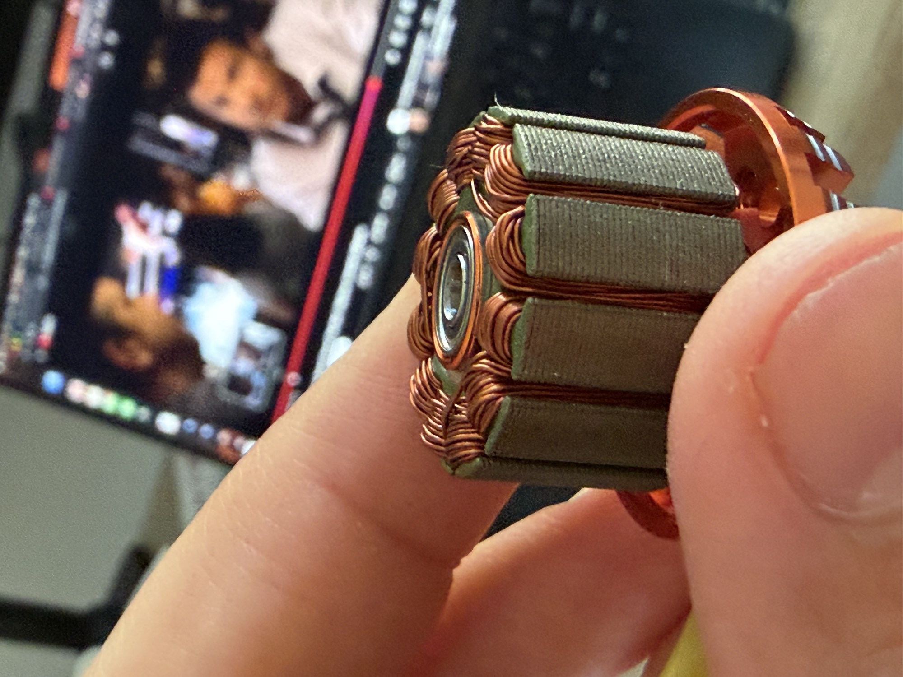

Propulsion (2026)
Propulsion is an interesting word. When we talk about smart organisms—and by 2026, LLMs and AI systems are often treated that way—we usually imply something living. Living implies movement: kinematics, locomotion, and the ability to act in the world.
There is enormous attention on the smarts right now. This project is time spent on the other half of the package: the hardware that makes a smart system move. I started by learning how to build brushless DC motors from scratch.
The design is a tiny 3N4P radial-flux outrunner: three stator teeth, four rotor magnets, and the fewest coils that can run from a hobby three-phase ESC. I designed and printed the structure, wound each phase by hand, installed the magnets and bearings, and put the entire thing on a very scrappy bench setup.


V1 failed. The ESC armed and the rotor jerked, but it never completed a rotation, even with a hand flick. The back-EMF was only around 0.2–1 mV: nowhere near enough for the sensorless ESC to lock onto. The plastic core, modest winding count, and roughly 1.5 mm air gap produced too little magnetic flux.
For V2 I tightened the air gap to less than a millimeter, thinned the tooth tips, added fillets and better wire routing, and squeezed in more turns of the same 24 AWG magnet wire. The purchased parts stayed the same; only the printed geometry and winding changed.


V2 spun. It needed a manual flick to start, only ran reliably at low throttle, sounded terrible, and stopped on its own in under a minute—but it spun. The loose M3 screw I used as a shaft caused wobble and noise, while the many turns required by the weak plastic magnetic circuit created heat. Still, this was enough to validate the electrical layout and the direction of the design.

To understand the gap between this experiment and a real motor, I also tore down a commercial DYS D2830 outrunner and studied the low-cost modular actuator developed for MIT’s Mini Cheetah. The hobby motor uses a laminated iron stator and steel rotor can; the Cheetah-style actuator pairs a torque-dense motor with a low-ratio planetary gearbox. That is the long-term north star.

I built a lumped-parameter simulator alongside the hardware. It models back-EMF, torque-speed behavior, copper loss, and slot fill as winding count, wire size, and air gap change. It is not finite-element analysis, but it makes the next physical iteration less blind.
V3 is the next step. It keeps the 3N4P topology but replaces the magnetic path and makes the rotating assembly less questionable: laser-cut steel tooth laminations, a steel rotor back-iron ring, a proper 3 mm machined shaft, and Kapton insulation. The goal is simple: start cleanly and run continuously for five minutes without an ESC dropout or melting anything.
The full build logs, CAD links, bill of materials, benchmark teardown, simulator, and future iterations are open source in the Propulsion repository on GitHub.